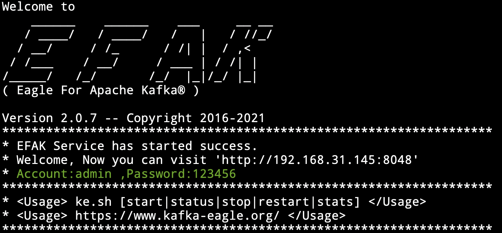

Install on Linux/macOS
Overview
This page explains how to install Kafka Eagle dependencies, download and install Kafka Eagle, get the service up and running on your Linux or macOS system, and the installation package details.
Note on upgrading
While the process for upgrading Kafka Eagle is very similar to installing Kafka Eagle, there are some key backup steps you should perform. Read Upgrading Kafka Eagle for tips and guidance on updating an existing installation.
1. Download and install
You can download the Kafka Eagle source code on GitHub to compile and install by yourself, or by downloading a binary .tar.gz file.
| Kafka Eagle | Repository |
|---|---|
| Github | https://github.com/smartloli/kafka-eagle |
| Download | http://download.kafka-eagle.org/ |
Note on install
We recommend using the official compiled binary installation package.
2. Install JDK
If there is a JDK environment on the Linux server, this step can be ignored, and the installation of the next steps. If there is no JDK, first to the Oracle official website to download JDK.
JAVA_HOME Configure
Extract the binary installation package to the specified directory:
cd /usr/java
tar -zxvf jdk-xxxx.tar.gz
mv jdk-xxxx jdk1.8
vi /etc/profile
export JAVA_HOME=/usr/java/jdk1.8
export PATH=$PATH:$JAVA_HOME/binThen, we use the . /etc/profile to enable the configuration to take effect immediately.
Note
If the authority is insufficient, please use the sudo command.
Finally, we input java -version, according to the following information:
Note
java version "1.8.0_60"
Java(TM) SE Runtime Environment (build 1.8.0_60-b27)
Java HotSpot(TM) 64-Bit Server VM (build 25.60-b23, mixed mode)
3. Extract Kafka Eagle
Here we extract to /data/soft/new directory and extract:
tar -zxvf kafka-eagle-xxx-bin.tar.gzrm -rf kafka-eagle
mv kafka-eagle-xxx kafka-eagleThen, configure Kafka Eagle profile
vi /etc/profile
export KE_HOME=/data/soft/new/kafka-eagle
export PATH=$PATH:$KE_HOME/binFinally, we use the . /etc/profile to enable the configuration to take effect immediately.
4. Configure Kafka Eagle system file
Configure Kafka Eagle according to the actual situation of its own Kafka cluster, For example, zookeeper address, version type of Kafka cluster (zk for low version, kafka for high version), Kafka cluster with security authentication enabled etc.
cd ${KE_HOME}/conf
vi system-config.properties
# Multi zookeeper&kafka cluster list -- The client connection address of the Zookeeper cluster is set here
kafka.eagle.zk.cluster.alias=cluster1,cluster2
cluster1.zk.list=tdn1:2181,tdn2:2181,tdn3:2181
cluster2.zk.list=xdn1:2181,xdn2:2181,xdn3:2181
# Add zookeeper acl
cluster1.zk.acl.enable=false
cluster1.zk.acl.schema=digest
cluster1.zk.acl.username=test
cluster1.zk.acl.password=test123
# Kafka broker nodes online list
cluster1.kafka.eagle.broker.size=10
cluster2.kafka.eagle.broker.size=20
# Zkcli limit -- Zookeeper cluster allows the number of clients to connect to
kafka.zk.limit.size=25
# Kafka Eagle webui port -- WebConsole port access address
kafka.eagle.webui.port=8048
# Kafka offset storage -- Offset stored in a Kafka cluster, if stored in the zookeeper, you can not use this option
cluster1.kafka.eagle.offset.storage=kafka
cluster2.kafka.eagle.offset.storage=kafka
# Whether the Kafka performance monitoring diagram is enabled
kafka.eagle.metrics.charts=false
# Kafka Eagle keeps data for 30 days by default
kafka.eagle.metrics.retain=30
# If offset is out of range occurs, enable this property -- Only suitable for kafka sql
kafka.eagle.sql.fix.error=false
kafka.eagle.sql.topic.records.max=5000
# Delete kafka topic token -- Set to delete the topic token, so that administrators can have the right to delete
kafka.eagle.topic.token=keadmin
# Kafka sasl authenticate
cluster1.kafka.eagle.sasl.enable=false
cluster1.kafka.eagle.sasl.protocol=SASL_PLAINTEXT
cluster1.kafka.eagle.sasl.mechanism=SCRAM-SHA-256
cluster1.kafka.eagle.sasl.jaas.config=org.apache.kafka.common.security.scram.ScramLoginModule required username="admin" password="admin-secret";
# If not set, the value can be empty
cluster1.kafka.eagle.sasl.client.id=
# Add kafka cluster cgroups
cluster1.kafka.eagle.sasl.cgroup.enable=false
cluster1.kafka.eagle.sasl.cgroup.topics=kafka_ads01,kafka_ads02
cluster2.kafka.eagle.sasl.enable=true
cluster2.kafka.eagle.sasl.protocol=SASL_PLAINTEXT
cluster2.kafka.eagle.sasl.mechanism=PLAIN
cluster2.kafka.eagle.sasl.jaas.config=org.apache.kafka.common.security.plain.PlainLoginModule required username="admin" password="admin-secret";
cluster2.kafka.eagle.sasl.client.id=
cluster2.kafka.eagle.sasl.cgroup.enable=false
cluster2.kafka.eagle.sasl.cgroup.topics=kafka_ads03,kafka_ads04
# Default use sqlite to store data
kafka.eagle.driver=org.sqlite.JDBC
# It is important to note that the '/hadoop/kafka-eagle/db' path must be exist.
kafka.eagle.url=jdbc:sqlite:/hadoop/kafka-eagle/db/ke.db
kafka.eagle.username=root
kafka.eagle.password=smartloli
# (Optional) set mysql address
#kafka.eagle.driver=com.mysql.jdbc.Driver
#kafka.eagle.url=jdbc:mysql://127.0.0.1:3306/ke?useUnicode=true&characterEncoding=UTF-8&zeroDateTimeBehavior=convertToNull
#kafka.eagle.username=root
#kafka.eagle.password=smartloli5. Start the Kafka Eagle server
In the $KE_HOME/bin directory, there is a ke.sh script file. Execute the start
command as follows:
cd ${KE_HOME}/bin
chmod +x ke.sh
./ke.sh startAfter that, when the Kafka Eagle server is restarted or stopped, execute the following command:
ke.sh restart
ke.sh stopAs shown in the following figure:
